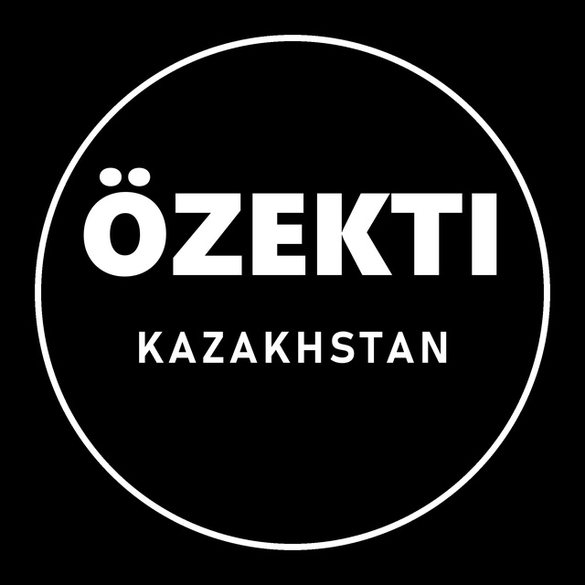

ÖZEKTI KAZAKHSTAN NEWSEffective date: October 2, 2026
This Privacy Policy explains how ÖZEKTI KAZAKHSTAN NEWS ("we") handles information in connection with the OZEKTI NEWS application and our news channels.
OZEKTI NEWS is an internal publishing tool used only by our own editorial team to upload our own news videos to our own TikTok account @ozektikazakhstan. It is not offered to, and cannot be used by, other TikTok users.
We do not access, collect or store data of any other TikTok users, and we do not read followers, messages or comments.
Solely to upload news videos created by our team to our own TikTok account.
Access tokens are stored securely on our own computer/server and are never sold or shared with third parties. We use TikTok, Meta (Facebook, Instagram, Threads) and Telegram only as publishing destinations, and an AI service to help draft news texts from public news sources; no personal data is sent to it.
Access can be revoked at any time in TikTok settings (Security → Manage app permissions). On revocation or on request by email, stored tokens are deleted.
Our service is not directed at children under 13.
We may update this policy; the effective date above will change accordingly.
Contact: ozektikazakhstan@gmail.com